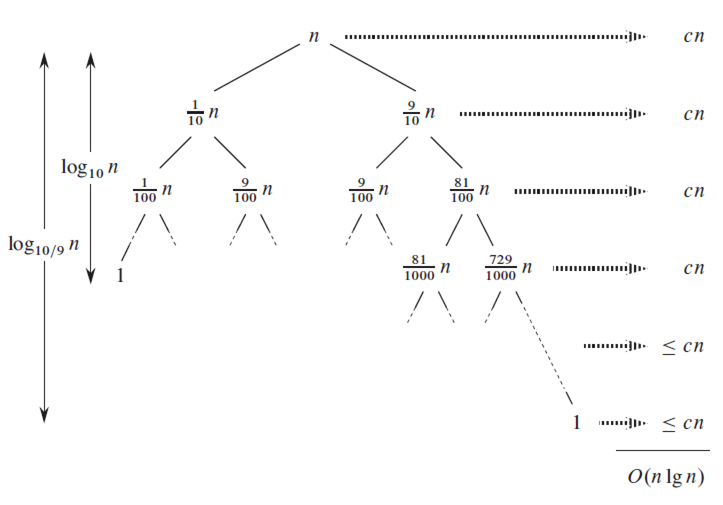
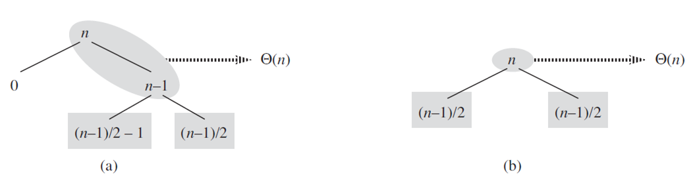

Summary
quicksort의 실행시간은 분할(partitioning)이 균형(balanced) 또는 불균형(unbalanced)이냐에 따라 결정된다.
- 균형시 : 병합 정렬처럼 빠르게 실행된다.
- 불균형시 : 삽입 정렬처럼 느리게 실행된다.
Worst-case partitioning
worst-case 분할 작업은 n-1 요소와 0 요소를 만든다. (증명 : Exercises 7.4.1)
T(n)= T(n-1) + T(0) + Θ(n)
= T(n-1) + Θ(n)
위 식을 재귀의 각 level에서 더해가면 (공식 A.2에 의해서), 실행시간은 Θ(n2) 이다.
정렬된 배열인 경우, 실행시간은 삽입 정렬 O(n) 퀵 정렬 Θ(n2) 이므로 비효율적이다.
Best-case partitioning
T(n) = 2T(n/2) + Θ(n)
마스터 정리 2번을 이용하면 T(n) = Θ(n lg n) 이다.
Balanced partitioning
Balanced partitioning은 worst-case보다 best-case에 더 가깝다.
T(n) = T(n/10) + T(9 * n/10) + cn

Figure 7.4재귀 나무에 대한 QUICKSORT. 여기서 PARTITION은 O(n lg n) 실행 시간을 가지며, 항상 9-to-1 분할을 만든다.
노드는 오른쪽에 있는 레벨당 비용과 함께 부분문제 크기를 보여준다.
Intuition for the average case
※ 모든 입력에 대한 순열은 확률적으로 동등하다고 가정한다.
average-case에서 PARTITION은 "좋은(good)" 그리고 "나쁜(bad)" 분할의 섞은 형태를 만들어 낸다.
가정
- 좋은 분할과 나쁜 분할은 나무의 각 레벨을 바꾼다.
- 좋은 분할은 best-case이고, 나쁜 분할은 worst-case 이다.

Figure 7.5(a) quicksort에 관한 재귀나무의 두 레벨, (b) 아주 잘 균형잡힌 재귀 나무의 단일 레벨
a의 첫번째 분할은 Θ(n) 이지만 두번째 분할 Θ(n-1)로 흡수되기 때문에 (a)나 (b)나 별 차이 없이 Θ(n)을 갖는다.
따라서, 좋은 분할이든 나쁜 분할이든 O(n lg n) 실행시간을 갖게 된다.
Exercises
7.2.1
Use the substitution method to prove that the recurrence T(n) = T(n-1) + Θ(n) has the solution T(n) = Θ(n2), as claimed at the beginning of Section 7.2.
⇒ T(n) ≤ c1n2 이라 추측하고 Θ(n)을 c2 n으로 표현하면 식은 다음과 같다.
$$\begin{align*} T(n) &= T(n-1) + c_{2}n \\ &\leq c_{1}(n-1)^{2} + c_{2}n \\ &= c_{1}n^{2} - 2c_{1}n + c_{1} + c_{2}n \quad (c_{1} \leq 0, \ 2c_{1} \geq c_{2}, \ n \geq c_{1}/(2c_{1}-c_{2})) \\ &\leq c_{1}n^{2} \end{align*}$$
7.2.2
What is the running time of QUICKSORT when all elements of array A have the same value?
⇒ 실행시간 : Θ(n2) (7.1.2 참조)
7.2.3
Show that the running time of QUICKSORT is Θ(n2) when the array A contains distinct elements and is sorted in decreasing order.
⇒ PARTITION 에서 x 는 가장 작은 값이다. for 문 내의 if A[j] ≤ x 식은 무시된다. x보다 작은 A[j]는 없기 때문이다. PARTITION의 반환값은 항상 p이며, 재귀식 T(n) = T(n-1) + Θ(n) 이다. 따라서, 실행 시간은 Θ(n2) 이다.
7.2.4
Banks often record transactions on an account in order of the the times of the transactions, but many people like to receive their bank statements with checks listed in order by check number. People usually write checks in order by check number, and merchants usually cash them with reasonable dispatch. The problem of converting time-of-transaction ordering to check-number ordering is therefore the problem of sorting almost-sorted input. Argue that the procedure INSERTION-SORT would tend to beat the procedure QUICKSORT on this problem.
⇒ 완벽히 정렬된 입력에 대한 INSERTION-SORT의 실행시간은 Θ(n) 이다. 대부분이 정렬된(almost sorted) 입력 또한 마찬가지로 Θ(n) 이다. 그러나 QUICKSORT는 Θ(n2)시간이 필요하다. (worst-case partitioning 참조)
7.2.5
Suppose that the splits at every level of quicksort are in the proportion 1- α to α, where 0 < α ≤ 1/2 is a constant. Show that the minimum depth of a leaf in the recursion tree is approximately -lg n / lg α and the maximum depth is approximately -lg n / lg (1- α). (Don't worry about integer round-off.)
⇒ 최소 깊이는 분할(partititon)의 작은 부분을 항상 취한다. ㅡ즉, 매번 분할된 요소에 α로 곱한다. 한 번 반복하는 것은 요소 개수를 n에서 αn으로 감소시킨다. i번 반복하는 것은 요소 개수를 αi n으로 감소시킨다. 나뭇잎(leaf)에서는 단 한 개의 요소만 있기 때문에, 깊이 m인 최소 깊이의 나뭇잎에서 모든 요소의 수는 αm n = 1 ( αm = 1/n) 이다. 양변에 로그를 취하면, m lg α = -lg n, 또는 m = -lg n / lg α 를 얻는다.
이와 비슷하게, 최대 깊이는 분할의 큰 부분을 항상 취한다. ㅡ즉, 매번 분할된 요소에 1-α를 곱한다. 왼쪽에 하나의 요소가 있을 때(즉, (1-α)M n = 1 일 때) 최대깊이 M에 도달한다. 그러므로 M = -lg n / lg (1-α).
-----------------------------------------------------------
올림, 버림을 무시했기에 위의 모든 식은 근사치다.
7.2.6 ★
Argue that for any constant 0 < α ≤ 1/2, the probability is approximately 1-2 α that on a random input array, PARTITION produces a split more balanced than 1- α to α.
⇒ 무작위 입력에 대해서, partition 후의 배열의 특정 위치가 pivot이 될 것이다. 만일 pivot이 (αn, (1 − α)n) 범위에 있다면, 분할은 (1−α to α) 보다 더 균형을 이룰 것이다. 이에 대한 확률은 ((1 − α)n − αn)/n 이고, 이것은 1 − 2α 와 같다.
7.2.4
7.2.6